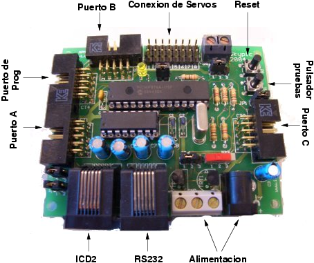

Next: 3 Planos Up: Hardware Libre: la Tarjeta Previous: 1 Introducción


Next: 3 Planos
Up: Hardware Libre: la
Tarjeta Previous: 1
Introducción
|
 |
Figura: Descripción de los componentes de la Skypic
La tarjeta Skypic permite ejecutar programas en cualquier microcontrolador PIC de 28 pines, aunque se diseñó para el modelo PIC16F876. Contiene sólo la electrónica indispensable para que el microcontrolador pueda funcionar, por lo que tiene unas reducidas dimensiones: 80x65mm. A través de cuatro conectores acodados para cable plano, se tiene acceso a todos los pines del Pic.
Cuadro: Características de la tarjeta Skypic
|
Tarjeta Skypic |
|
Conector para grabar desde el ICD2 de Microchip |
|
Conector telefónico para la conexión RS232 con el PC |
|
Led y pulsador para realizar pruebas |
|
Puerto para programación directa desde la tarjeta CT6811 u otra Skypic |
|
Puertos A,B y C accesibles mediante conector acodado de 10 vías |
|
Conexión directa de 8 servos compatibles Futaba |
Cuadro: Características del microcontrolador PIC16F876
|
PIC16F876 |
|
Microprocesador Risc de 8 bits |
|
Frecuencia de Reloj: 4Mhz |
|
Temporizador de 8 bits y uno de 16 bits |
|
Dos unidades de captura, comparación y PWM |
|
Buses síncronos I2C y SSP |
|
Unidad de comunicaciones serie asíncrona |
|
8 canales A/D de 10 bits |
|
Programación ``in circuit'' (ICSP) |
|
Memoria Flash de 8Kb y SRAM de 368 bytes |
|
Memoria eeprom de 256 bytes |
Las características principales se muestran en el cuadro
 y la disposición de los componentes en la figura
y la disposición de los componentes en la figura
 .
.
Los PIC son microcontroladores de tipo RISC, de 8
bits, que incorporan periféricos muy diversos: temporizadores,
unidades de comunicaciones serie síncronas y asíncronas,
bus CAN, USB, conversores A/D, comparadores, etc, por lo que se
adaptan a una gran variedad de aplicaciones. En el cuadro
 se han resumido las características del modelo Pic16F876.
se han resumido las características del modelo Pic16F876.
La programación del pic se realiza in circuit, por
lo que no es necesario extraerlo del zócalo. Se puede emplear
bien el grabador ICD2 de Microchip, o bien otra tarjeta Skypic con un
software de grabación (ver apartado
 ).
).


Next: 3 Planos
Up: Hardware Libre: la
Tarjeta Previous: 1
Introducción